Jabonería artesanal francesa
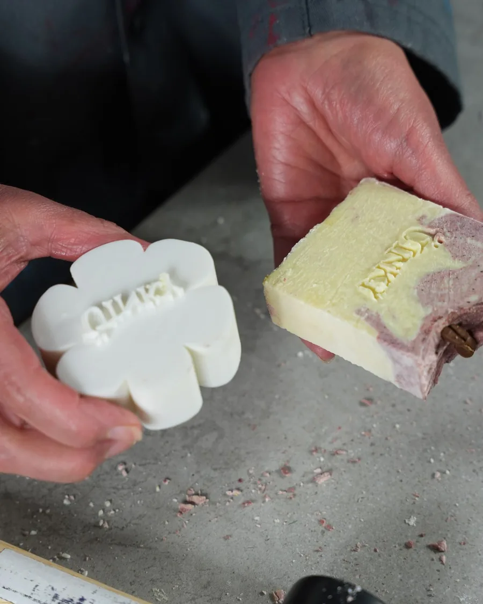
Proceso en frío, lotes pequeños y 30 días de curado antes de que la barra llegue a tu casa.
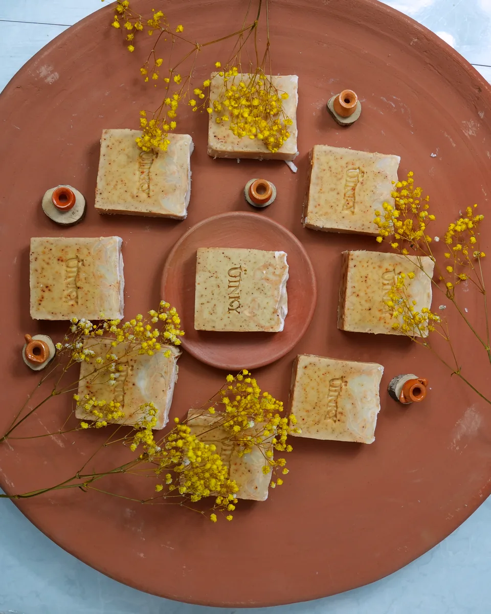
El jabón de la casa
La cúrcuma va molida y repartida en la masa, así que el color y las motitas salen de la raíz y no de un colorante. Encima lleva una veta de masa blanca que se dibuja a mano, una sola vez, antes de que la mezcla espese. Por eso no hay dos barras iguales. La acompañan naranja y vainilla: cítrico al abrir el agua, dulce al terminar.
Catálogo
Todos salen de la misma base de cuatro grasas. Lo único que cambia entre uno y otro es el bloque de aroma y color. Si algo se agota, el siguiente lote toma cuatro o cinco semanas.
Paquetes
Elige los que más te gusten, con un descuento rebajado, para que disfrutes de todas nuestras creaciones ÜINKY o PORTHOS para el hombre. Todos están formulados con aceites nobles y exquisitas notas perfumadas.
A tu gusto
Elige los jabones que quieras y cuántos de cada uno. Puedes mezclar ÜINKY y PORTHOS en la misma caja.
Por cada 3 jabones de 130 g, uno de 85 g va de regalo.Cúrcuma: 2 por $25, o a $12 si la sumas a tu caja.
El taller
En nuestro taller se implementan técnicas francesas para crear sofisticadas piezas de ritual personal: bloques botánicos que responden a la saponificación y al reposo que necesitan para que ÜINKY y PORTHOS tengan el equilibrio para el cuidado de la piel.
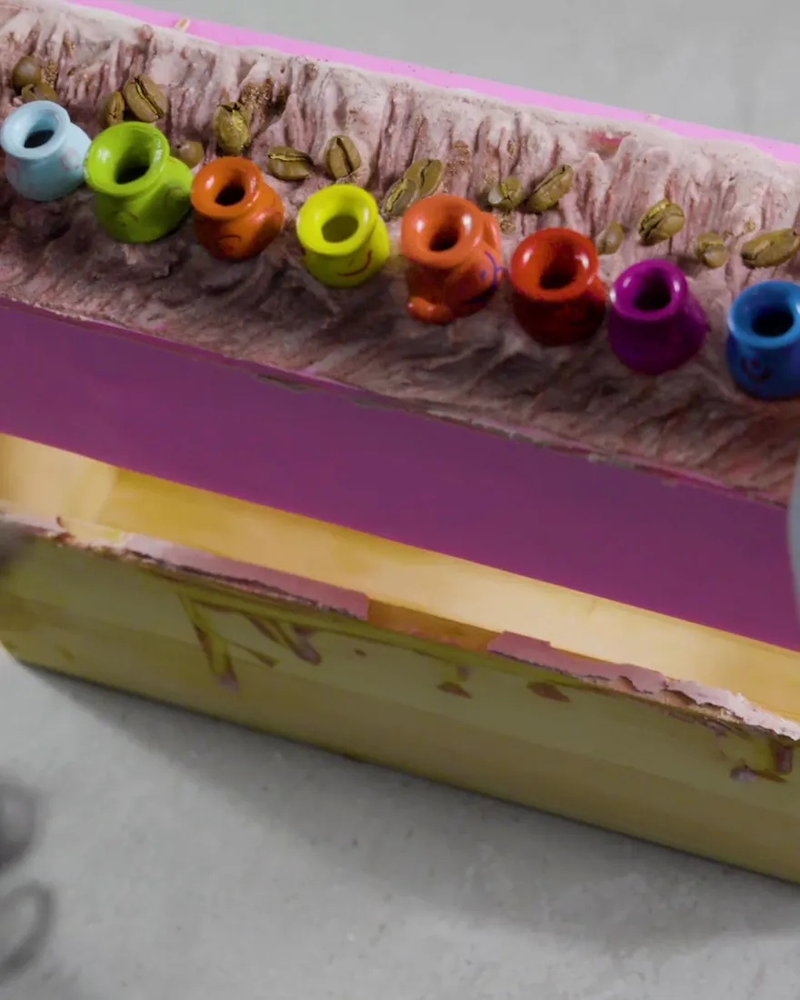
Los aceites se pesan al gramo y se baten con la solución de sosa hasta que espesa. Entran el aroma y el color, la mezcla pasa al molde y se decora antes de que endurezca.
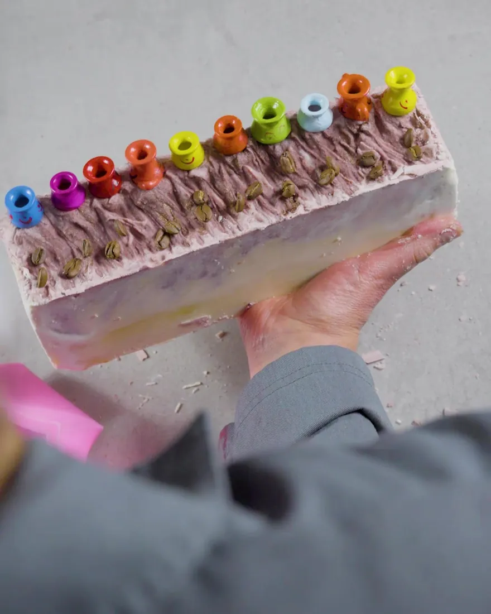
Veinticuatro horas después el jabón ya sostiene su forma. Se saca del molde de madera y se retira el forro de silicona sin apurar el borde.
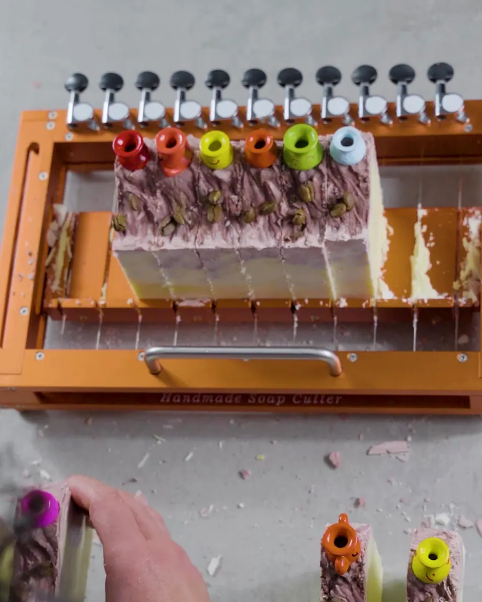
Un molde da entre diez y doce barras. La cortadora marca el grosor, pero el empuje es a pulso: cada pieza sale un poco distinta a la de al lado.
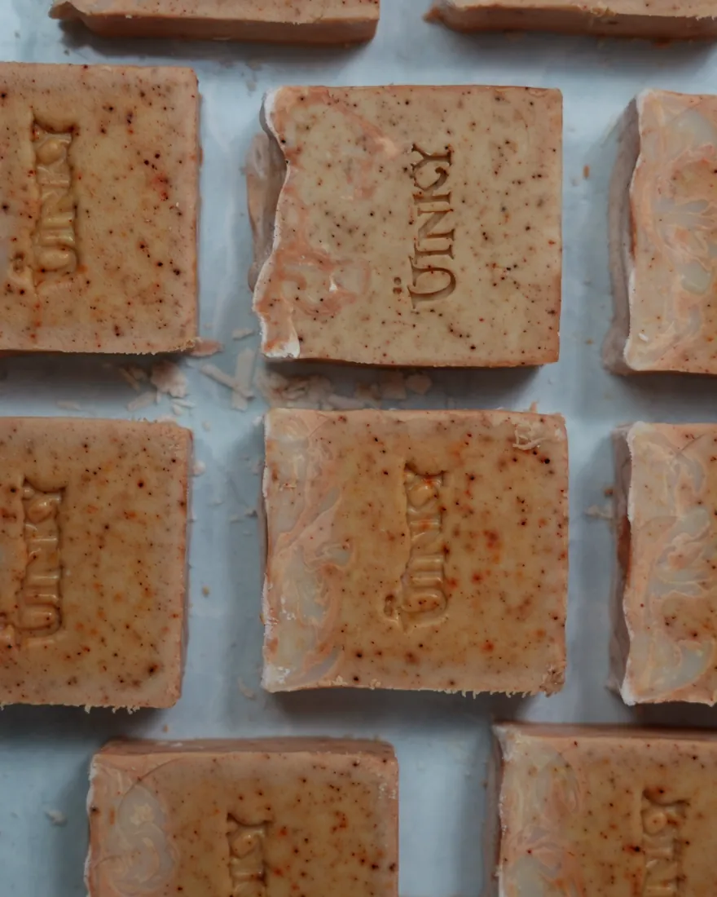
Un mes en rejilla, de pie y separadas. Al final se mide el pH y se descarta lo que no llega. Recién ahí la barra sale a la venta.
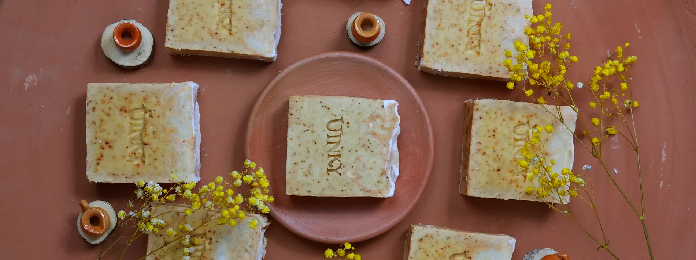
De un molde salen doce barras. Ninguna sale igual.Taller ÜINKY · Quito
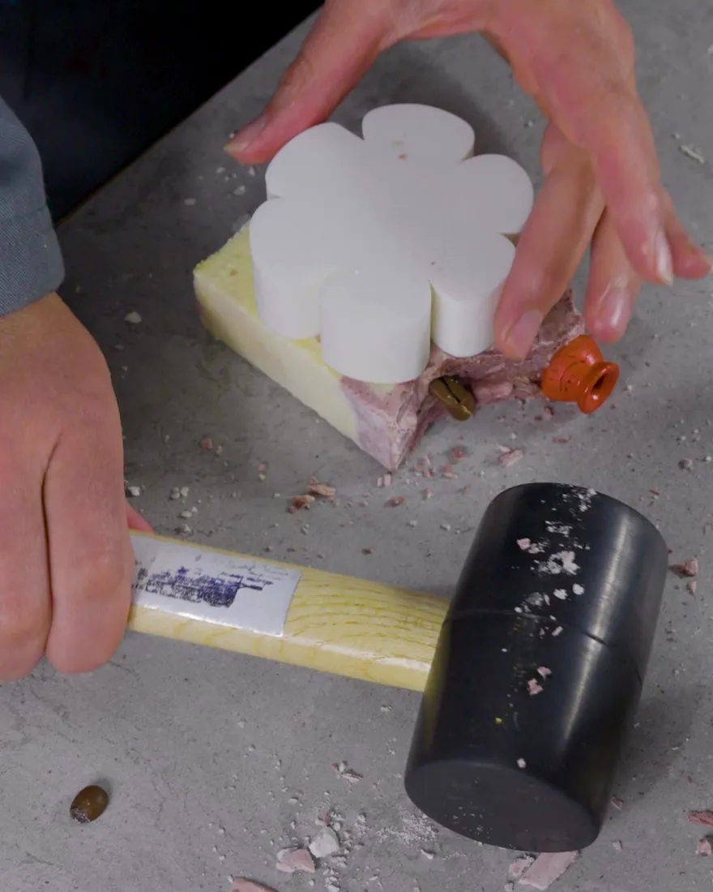
La receta
Cuatro grasas en la misma proporción para las cuatro recetas, con 9 % de sobreengrasado: queda aceite libre sin transformar, y es la razón por la que la barra limpia sin dejar la piel tirante.
Empaque
Cada barra va en film transparente con una etiqueta troquelada en forma de flor, atada al paquete. Sin caja de más, sin plástico rígido, sin nada que se bote apenas llega a casa.
Si el pedido es para regalo, lo armamos en set de tres barras surtidas con una tarjeta escrita a mano. Avísanos por WhatsApp con el nombre de quien lo recibe.
Armar un set de regalo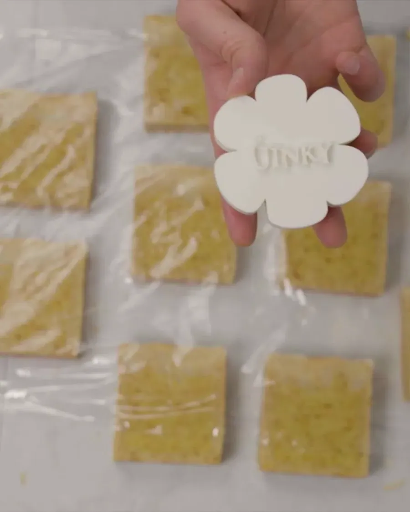
Del taller
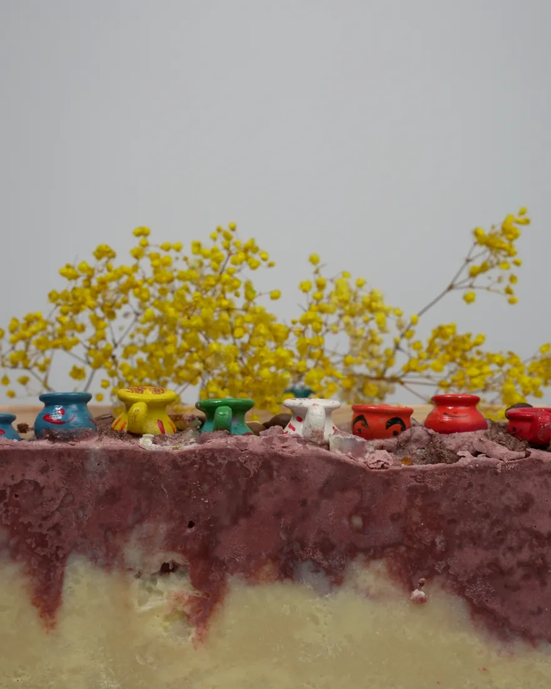
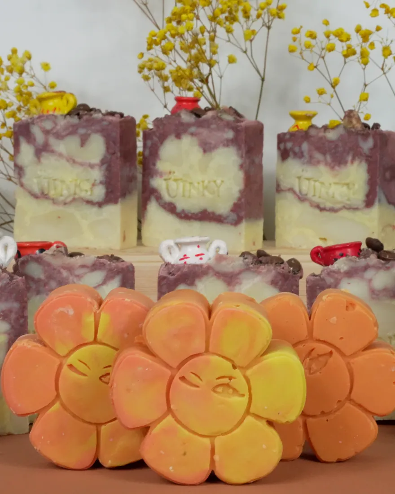
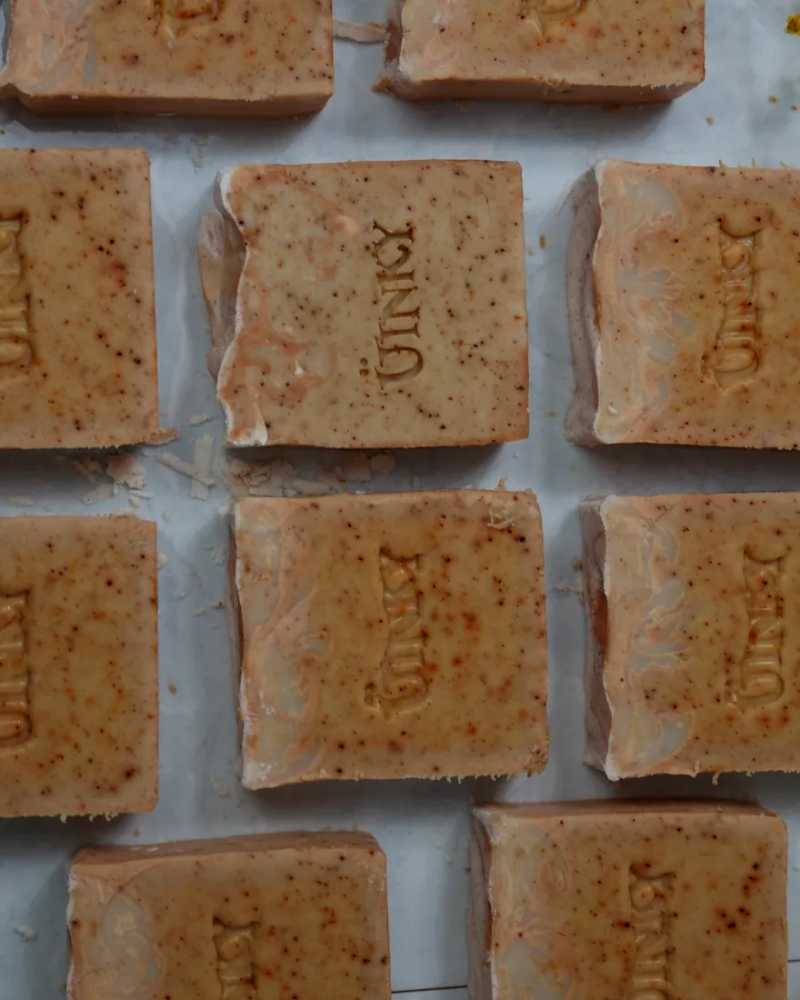
Antes de pedir
Entre cuatro y seis semanas de uso diario en la ducha, si se deja escurrir en una jabonera con drenaje. Una barra que se queda en el agua se gasta en la mitad del tiempo — es la diferencia más grande, más que la receta.
La base lleva 9 % de sobreengrasado, así que resulta más suave que un jabón industrial. Aun así lleva aceites esenciales y cúrcuma: si tienes la piel reactiva, prueba primero en una zona pequeña. No es un producto médico ni reemplaza la indicación de un profesional.
Todo por WhatsApp. Si lo que quieres está curado, sale el mismo día en Quito. Si el lote está en curado, la espera es de cuatro a cinco semanas y te avisamos la fecha exacta antes de que confirmes.
Sí, a todo Ecuador por transporte. El costo depende de la ciudad y se cobra aparte; para pedidos de seis barras o más suele salir a cuenta enviar todo junto.
Porque el color sale de cúrcuma, café y arcillas, no de un colorante estable, y la veta se dibuja a mano en cada molde. La variación de tono entre lotes es esperada; si una barra sale con un defecto real, la reponemos.
Escribe con el jabón que quieres y coordinamos entrega en Quito o envío al resto del país. Todavía no hay carrito ni pago en línea en la página — y así se responde más rápido.
Abrir WhatsApp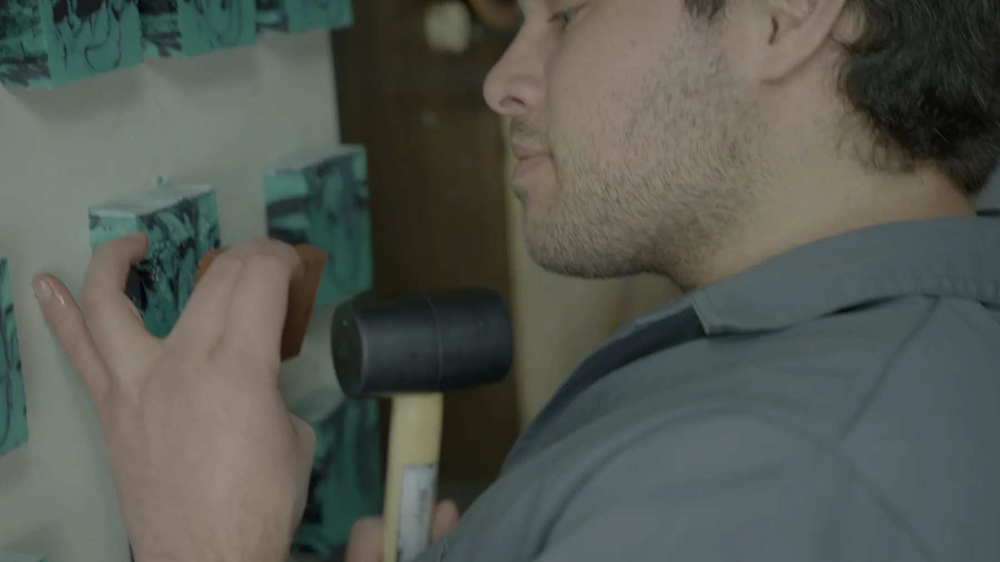
Jabón artesanal de lujo
Proceso en frío, lotes pequeños y 30 días de curado antes de que la barra llegue a tu casa.
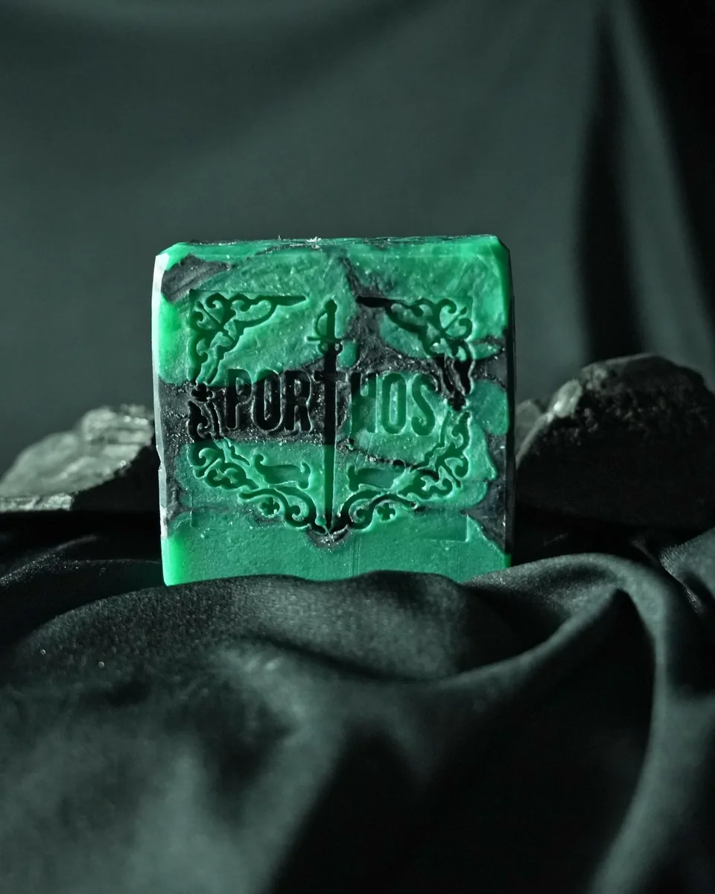
El jabón de la casa
El verde sale del extracto de bambú y el negro del carbón activado, que entra al final en hilos sueltos. Se pasa la varilla una sola vez: si se insiste, el humo se vuelve gris parejo y se pierde el dibujo. Por eso ninguna barra repite el mismo trazo.
Cuando está seca se le marca el escudo con un sello de bronce y un mazo de goma, barra por barra.
Catálogo
Los dos salen de la misma base de cuatro grasas. Lo único que cambia entre uno y otro es el bloque de aroma y color. Si algo se agota, el siguiente lote toma cuatro o cinco semanas.
Paquetes
Elige los que más te gusten, con un descuento rebajado, para que disfrutes de todas nuestras creaciones ÜINKY o PORTHOS para el hombre. Todos están formulados con aceites nobles y exquisitas notas perfumadas.
A tu gusto
Elige los jabones que quieras y cuántos de cada uno. Puedes mezclar ÜINKY y PORTHOS en la misma caja.
Por cada 3 jabones de 130 g, uno de 85 g va de regalo.Cúrcuma: 2 por $25, o a $12 si la sumas a tu caja.
El taller
En nuestro taller se implementan técnicas francesas para crear sofisticadas piezas de ritual personal: bloques botánicos que responden a la saponificación y al reposo que necesitan para que ÜINKY y PORTHOS tengan el equilibrio para el cuidado de la piel.
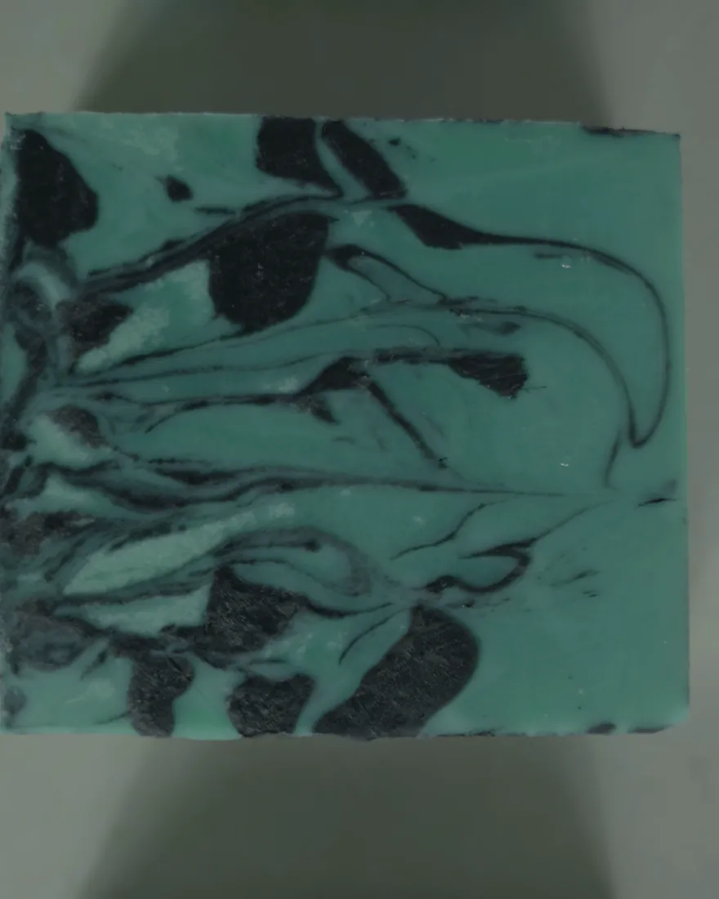
Los aceites se pesan al gramo y se baten con la solución de sosa hasta que espesa. Al final entra el carbón activado en hilos y se pasa la varilla una sola vez.
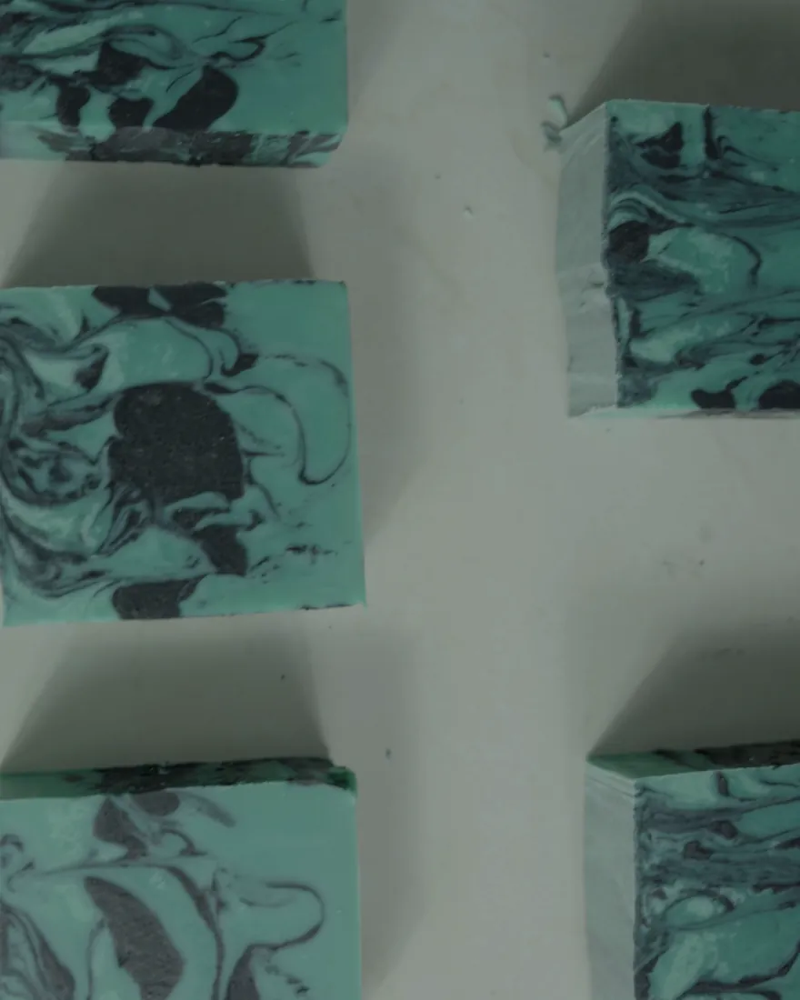
Veinticuatro horas después el jabón ya sostiene su forma. Un molde da entre diez y doce barras; la cortadora marca el grosor, pero el empuje es a pulso.
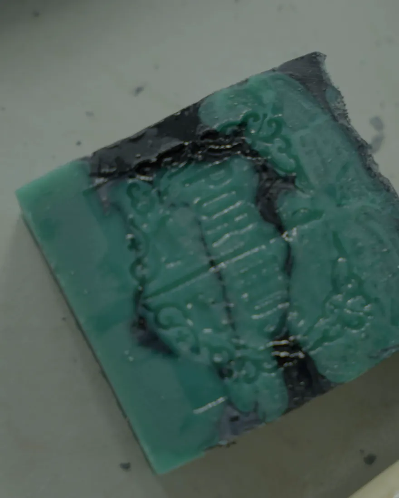
Sello de bronce y mazo de goma, un golpe seco por barra. Si la masa está muy fresca el relieve se cierra; si está muy dura se quiebra el borde.
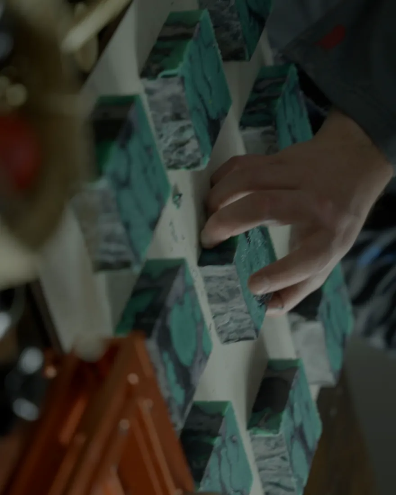
Un mes en rejilla, de pie y separadas. Al final se mide el pH y se descarta lo que no llega. Recién ahí la barra sale a la venta.
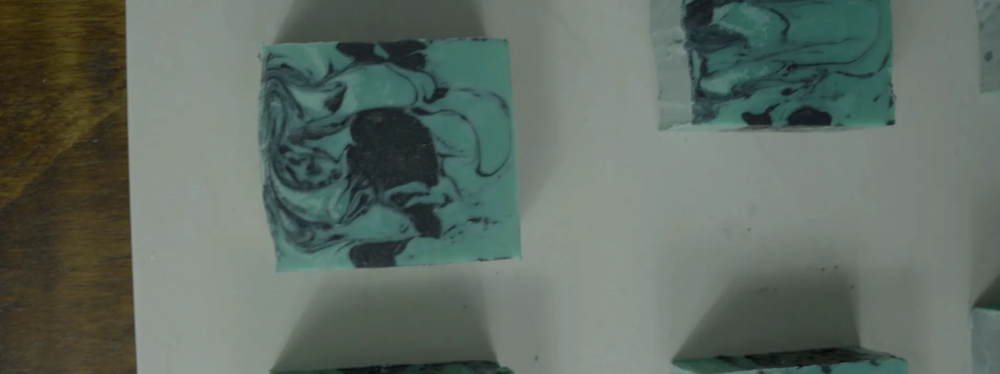
Doce barras por molde. Cada escudo se marca a mano, de un solo golpe.Taller PORTHOS · Quito
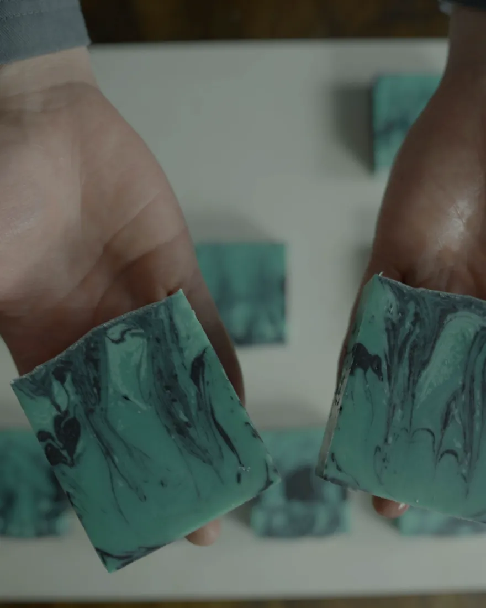
La receta
Cuatro grasas en la misma proporción para las dos recetas, con 9 % de sobreengrasado: queda aceite libre sin transformar, y es la razón por la que la barra limpia sin dejar la piel tirante.
Sobre esa base, el bloque de PORTHOS: extracto de bambú, carbón activado y aroma de bambú.
El empaque
La barra va dentro de una caja negra con el escudo y el marco ornamental en verde, y la etiqueta dentada con la fórmula al pie. No es una bolsa: es una caja que se puede regalar tal como llega.
Si el pedido es para regalo, escribimos el nombre a mano en la tapa. Avísanos por WhatsApp con el nombre de quien lo recibe.
Pedirlo para regalo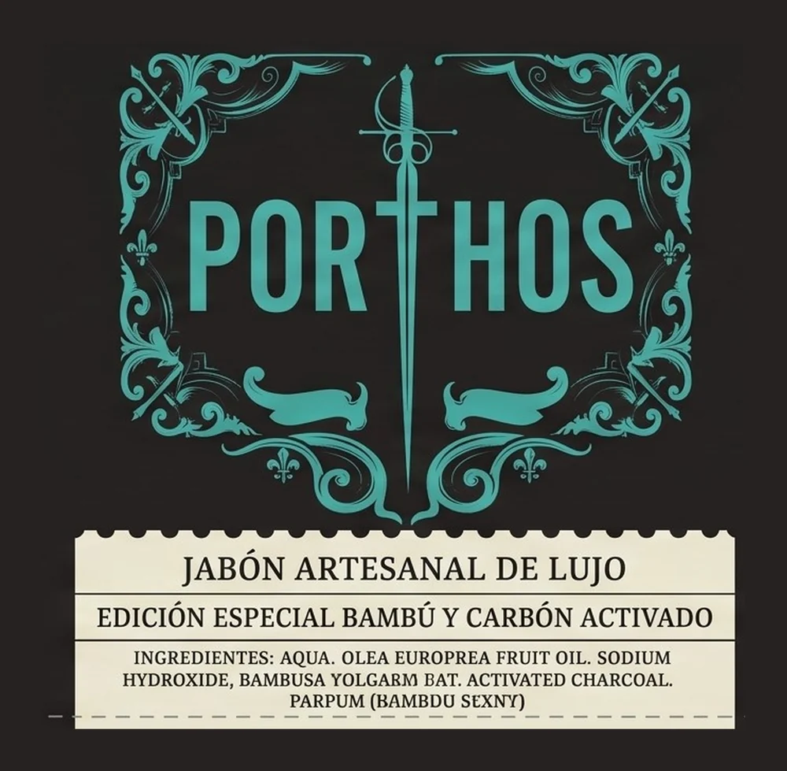
Del taller
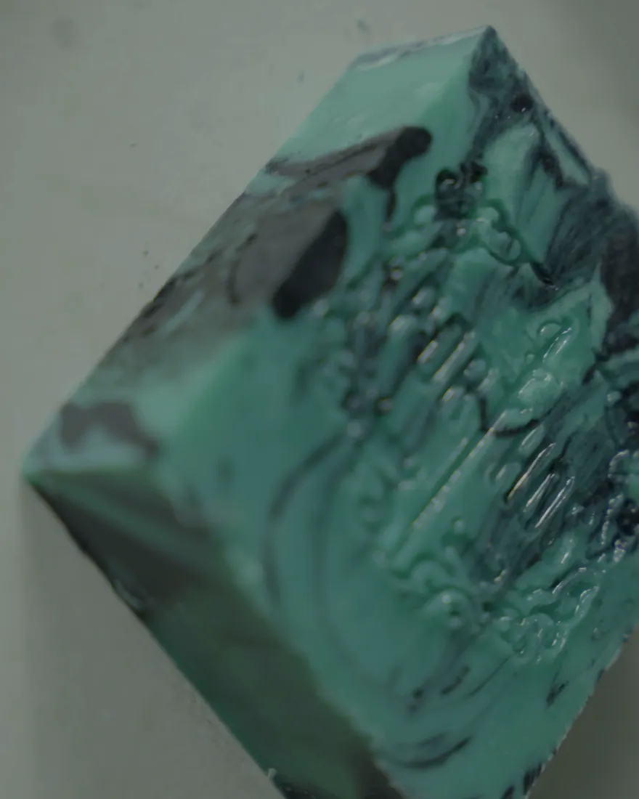
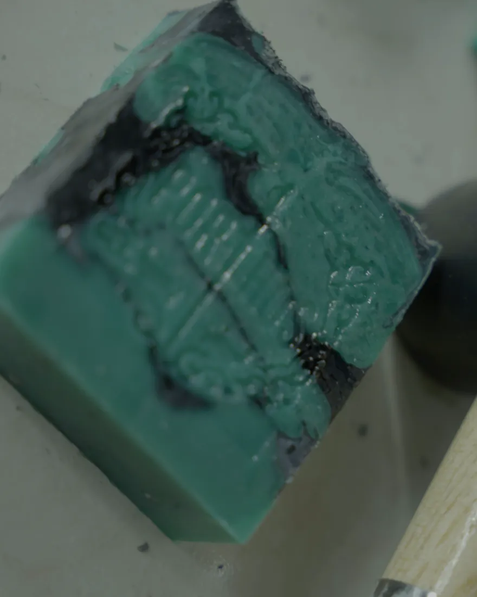
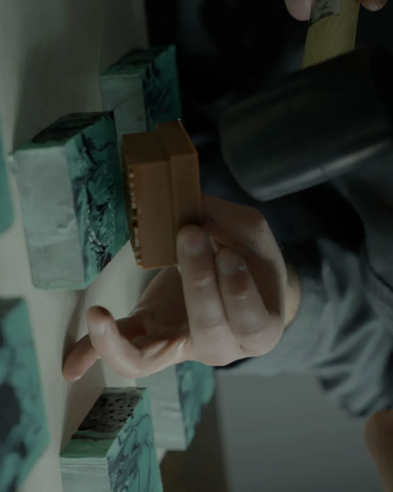
Antes de pedir
Entre cuatro y seis semanas de uso diario en la ducha, si se deja escurrir en una jabonera con drenaje. Una barra que se queda en el agua se gasta en la mitad del tiempo — es la diferencia más grande, más que la receta.
No. Va repartido dentro de la masa y sale con el agua; no deja rastro en la toalla ni en la jabonera. Lo que sí hace es dar una espuma gris los primeros usos, hasta que se gasta la capa exterior.
Sirve para el cuerpo y para las manos. En la cara depende de cada piel: la base lleva 9 % de sobreengrasado, así que resulta más suave que un jabón industrial, pero lleva aceites esenciales. Si tienes la piel reactiva, prueba primero en una zona pequeña. No es un producto médico ni reemplaza la indicación de un profesional.
Todo por WhatsApp. Si lo que quieres está curado, sale el mismo día en Quito. Si el lote está en curado, la espera es de cuatro a cinco semanas y te avisamos la fecha exacta antes de que confirmes.
Porque el veteado se dibuja a mano en cada molde y el escudo se marca de un golpe. La variación entre barras es esperada; si una sale con un defecto real, la reponemos.
Escribe con el jabón que quieres y coordinamos entrega en Quito o envío al resto del país. Todavía no hay carrito ni pago en línea en la página — y así se responde más rápido.
Abrir WhatsApp